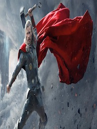

Caractéristique
- Type: Equipe
- Chef:Captain America
- Origines des Pouvoirs: Diverse
- Création : Septembre 1963
- Créateur : Stan lee et Jack Kirby
Présentation
Les Avengers rassemblent les plus grands héros de la Terre, réunis pour combattre les menaces face auxquelles un seul héros ne peut faire face. Formés des héros parmi les plus prestigieux et les plus puissants, les Avengers défendent la planète, et parfois l'univers, des menaces dépassant les autorités conventionnelles. Le groupe naquit après une alliance occasionnelle du premier Ant-Man (Hank Pym), sa coéquipière la Guêpe, l'incroyable Hulk, Iron-Man (Tony Stark) et Thor, le Dieu du Tonnerre, afin de contrecarrer la menace de l'Asgardien Loki, demi-frère de ce dernier. Les fondateurs furent réunis involontairement par Loki, qui fit accuser à tort Hulk d'une tentative de déraillement de train (que le titan vert avait en fait sauvé après que le dieu du mal avait menacé le train). Hulk devint alors un fugitif recherché par les autorités et son coéquipier adolescent, Rick Jones, avec ses amis de la Brigade des Jeunes, envoya un appel de détresse aux Quatre Fantastiques ; cependant, Loki, à la recherche d'un piège pour son demi-frère, détourna le message de Jones pour qu'il atteigne Thor. Par hasard, le message radio détourné atteignit également Tony Stark, Hank Pym et Janet van Dyne. Travaillant de concert, les quatre héros retrouvèrent Hulk et, avec ce dernier, ils démasquèrent et triomphèrent de Loki. Pym suggéra alors qu'ils demeurent ensembles en tant qu'équipe et la Guêpe proposa un nom « épique et imagé » pour le groupe : les Avengers.
Ajoutant des pouvoirs de croissance à son répertoire, Hank Pym adopta la nouvelle identité de Giant-Man. De son côté, sous son identité civile du richissime industriel Tony Stark, Iron-Man fournit le groupe financement et équipement de haute technologie, participant à la rédaction de la charte officielle des Avengers et faisant jouer son influence pour obtenir le soutien des autorités dans la formation du groupe. C'est ainsi que les Avengers reçurent une autorisation de sécurité A1 (ou « Priorité Avengers »), leur permettant d'accéder à de nombreuses informations gouvernementales afin de mieux protéger le pays et la planète, en dépit de l'opposition de James Murch, le représentant du gouvernement. La résidence de Manhattan de Stark devint le quartier général du groupe, bientôt connu sous le nom du Manoir des Avengers, entretenu par le majordome Edwin Jarvis ; celui-ci allait devenir un confident, un conseiller et un ami pour la plupart des membres du groupe, une sorte de membre non officiel des Avengers. Après avoir affronté le Dr Fatalis, le groupe subit son premier revers en affrontant le Fantôme de l'espace, un être polymorphe originaire des Limbes, qui dupa les Avengers afin qu'ils se combattant les uns les autres. Il fut finalement démasqué et renvoyé dans les Limbes mais la crise révéla les tensions existantes entre l'instable Hulk et le reste de l'équipe, incitant le titan vert à quitter le groupe dans un accès de colère.
Quand les quatre membres fondateurs du groupe quittèrent les rangs actifs des Avengers pour des raisons personnelles, Captain América resta seul pour prendre la tête d'une étonnante formation comprenant uniquement d'anciens criminels : l'archer et hors-la-loi nommé Hawkeye (Clint Barton), et les deux jumeaux mutants, anciens membres de la Confrérie des mauvais mutants de Magnéto : Vif argent et la Sorcière rouge. Namor fut également sollicité pour rejoindre le groupe mais déclina l'offre. Le « quatuor de Cap » se révéla rapidement digne de ses augustes prédécesseurs, même si Hawkeye se disputait constamment avec son nouveau mentor, jusqu'au moment où leur rivalité se transforma en une solide et inébranlable amitié, faite de confiance et de respect mutuels et Hawkeye devint l'un des piliers des Avengers. Le professeur de Hawkeye durant son adolescence, le Swordsman (Jacques Duquesne) infiltra brièvement les Avengers comme agent double du Mandarin avant d'être démasqué et contraint à prendre la fuite, au moment même où il commençait à éprouver du respect et de l'admiration pour les héros, s'apprêtant à trahir son employeur. Peu après, Amora l'Enchanteresse – ancienne membre des Maîtres du mal – et Power-Man (Erik Josten, un ancien mercenaire du Baron Zemo) s'associèrent, obligeant les Avengers à se séparer provisoirement en les faisant injustement accuser de divers crimes ; mais les membres de l'équipe purent rapidement prouver que les crimes avaient été commis par les deux associés et le nom des Avengers fut lavé de tout soupçon, permettant aux quatre héros de reformer l'équipe. Aussi bien l'Enchanteresse que Power-Man et le Swordsman allaient se heurter à nouveau aux Avengers par la suite, les deux derniers formant même un duo régulier au cours de leurs activités criminelles. Les Avengers de Captain affrontèrent également de nouvelles menaces, comme le Cirque infernal, le Scarabée (Abe Jenkins) ou Attuma, et se heurtant à leur tour au Dr Fatalis et à Kang le Conquérant, se rendant même à son époque, où ils assistèrent à la mort de Ravonna, la fiancée du Conquérant.
Quand la Guêpe et le Frelon quittèrent durablement les Avengers pour une expédition scientifique, ils furent rapidement remplacés par la Sorcière rouge et Vif argent, qui avaient abandonné Magnéto quelques semaines auparavant, après un affrontement entre celui-ci avec les Avengers et les X-Men. Les jumeaux participèrent au combat des Avengers contre Arkon, puis, menacé par la faillite, les Avengers se résolurent à accepter quelques contrats du financier corrompu Cornelius van Lunt, en échange de son arrêt des manœuvres financières. Cependant, ils abandonnèrent rapidement le service de Lunt, après avoir affronté le criminel appelé Kronus, révélé finalement comme le propre chauffeur du financier. En parallèle, les Avengers affrontèrent à plusieurs reprises le cartel du crime nommé le Zodiaque, ignorant que celui-ci était en réalité dirigé par Lunt lui-même sous son identité masquée de Taurus. Leur premier combat contre le Zodiaque associa les Avengers avec le directeur du SHIELD, Nick Fury, qui avait infiltré le cartel du crime, et au héros kree Captain Marvel (Mar-Vell), récemment fusionné avec Rick Jones, l'ancien allié adolescent des Avengers. Lors de leurs batailles avec le Zodiaque, les Avengers croisèrent aussi la route du héros amérindien Loup rouge puis du justicier aveugle Daredevil. Vers cette époque, les héros se heurtèrent également à une nouvelle incarnation des Fils du Serpent, avant d'affronter la Légion fatale, un groupe de criminels réunis par le Moissonneur avec pour seul but de détruire les Avengers. Après avoir fait échec à l'Enchanteresse et son équipe des Libératrices, les Avengers retrouvèrent le Chevalier noir pour combattre l'Asgardienne et son nouvel allié, Arkon, avant de croiser une version alternative d'eux-mêmes : le Suprême Escadron de la Terre-S, les aidant contre l'Enfant prodige pour sauver leur monde, après une première rencontre houleuse. Peu après, la Panthère noire quitta l'équipe pour regagner son pays et les Avengers, avec le Faucon (le nouveau coéquipier de Captain América), partirent à la recherche de Hulk, s'alliant finalement au titan vert pour combattre l'étrange Psyklop. Puis les Avengers firent face à la menace du Kree Ronan, retrouvant pour l'occasion le Frelon et la Guêpe, ainsi que Captain Marvel. Pendant toute cette époque, une attirance mutuelle et inattendue se développa entre la Sorcière rouge et la Vision.
Principaux membres
 |
 | |
| Captain America | Iron Man | Thor |